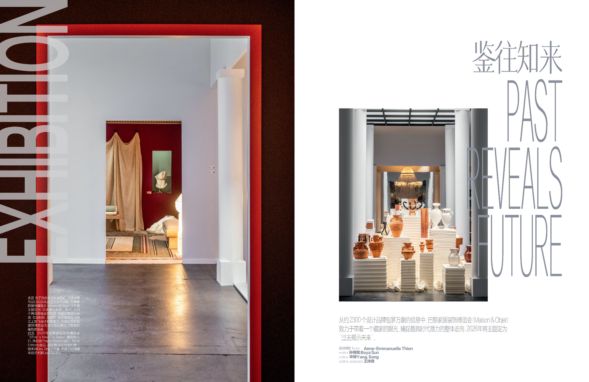

Introduction ：鉴往知来 Past reveals future
作为全球唯一覆盖家居全品类的设计展会，巴黎家居装饰博览会（Maison & Objet）将自己定位为一个跨品类、跨行业的全景趋势观察平台。从约 2300 个参展品牌所提供的万象信息中，M&O致力于带着一个藏家的眼光，捕捉最具时代潜力的整体走向。
本届 M&O 将主题定为“过去揭示未来”。如今，人们不再简单地丢弃物品，而是对其进行改造，在旧材料、旧造型，甚至直接在旧物之上放飞设计的想象力。M&O 敏锐地意识到，这一趋势正回应了全球生态危机、过度消费与设计同质化这三大当代议题，并为当代设计提出了具有前瞻性的答案。

Rencontrer Elizabeth Leriche
在瞬息万变的设计与室内设计领域，Elizabeth Leriche散发着一种难以描述的定力。“这是18世纪吊灯的经典造型，但是这一盏并没有用玻璃或水晶，而是选用了同样也能够保持光线的反射和亮度的链条，这让它颇具朋克摇滚的气质。”她的讲解娓娓道来，段落切分清晰，简洁干练。令人意外的是，每个句子突出重心所运用的语法结构，都与见到她之前视频中的如出一辙。这时，我们才恍然大悟：她所呈现的明晰并非是故意训练的演讲技巧，而是，这就是她的思考方式。
自 Maison & Objet Paris 创立以来，Leriche便是其最重要的顾问之一；与此同时，她长期与 Pierre Frey、Élitis、Hermès、Chaumet、rochebobois等品牌合作，此外，许多其他展会如Paris Design Week、La Redoute Intérieurs 也会请她提供风格咨询。对许多设计师与品牌而言，Leriche的选择，往往意味着被真正“看见”。
为了呼应今年的主题“过去揭示未来”，Leriche 将新希腊风格、新罗马风格、Art Deco 与新未来主义四种不同的时代语言杂糅在同一空间之中，形成一种极具当代性的拼贴式表达。就好像启发了她的那件学生作品一样——由Lucie Gholam 所设计的Ancient’ish Ruin，九块毫不相干的石膏、陶塑、金属残件，却整整齐齐地拼成了一方四平八稳的置物架。介于“废墟”和“构造”之间，一方面循环利用了废材，一方面又创造了一种新的语言。Leriche感动于年轻一代关于古迹的另类珍视，展区的名字也由此而来：“未来考古学”。
走进展区，古希腊经典的Amphoras双耳细颈瓶，匪夷所思地被UTOPIA & UTILITY用不锈钢、钢、铝、铜手术刀般缝合在一起；脚下熟悉的大理石拼花，实质是来自Galerie B定制的一整块地毯；回过神来，墙角悬挂的发光绒毛，竟然是由LA LANGUOCHAT用坚硬的玫瑰色金属编织出的效果，而面前纵列的渐变方块，原来是金属在不同氧化阶段自然形成的色差，如同一部演化的编年史在墙面缓慢展开。一个接连一个的“另外”，令我们在Leriche的空间留连忘返。
我们不禁好奇，Leriche是如何在有限的时间内，找到如此大量个性鲜明、材料突出、同时还能呼应主题的作品？是先事先策划主题，还是根据物料再针对性地整理？ 她说，一定是词优先，每次她进行场景设计的时候，一定是先有一个词在脑海中确定，然后再展开搜索。
从词出发，用刚健的思路展开有目的的搜寻，讲起话来，自然胸有成竹，人的状态是舒展的，而不是在混乱的黑暗中去摸索出一星半点的秩序的匆忙。这种明亮，不简单是洞察力，而是来自于海量的资料收集，她不仅看完了所有的品牌目录，而且还会查阅这些设计师、画廊的历史，所以提到它们的时候如数家珍。（比如她介绍Galerie Alain Ellouz一直致力于发光大理石这类产品设计）
这种清晰感同样体现在她与团队、与展会系统的关系中。她非常清楚在哪个地方停顿，可以方便翻译完整地记忆这组信息的重点，她会不时微笑，肯定地点头，用自己的稳定和成熟来帮助团队形成自然的默契协作状态，然后继续她铿锵有力的节奏。一年一度的展会，对一些人来说可能是限时命题作文，Leriche却把它们当作一次机会，把它们当作她日常迸发的灵感可以团圆的家。
Leriche出生于卢瓦尔河谷的城堡中，从小就喜欢赤脚玩耍，她热爱旅行，倡导一种基于感官体验的风格观，可是同时，她试图令这种风格观建立在对世界的社会学和分析性理解之上，她喜欢和社会科学的学者交流，最喜欢的电影是Jane Campion的《钢琴课》，喜欢烹饪Mikkel Karstad的食谱，感受夏天和秋天的胡萝卜不同口感。
在Leriche的工作室官网，她的个人介绍是：“她对那些决定成败的细节有着敏锐的洞察力”，这个世界上天才不多，而精确地了解自己究竟才能何处的，更是稀少。